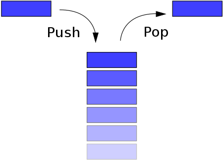
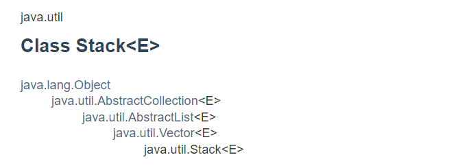

스택
https://docs.oracle.com/javase/7/docs/api/java/util/Stack.html 
1. 클래스

2. 특징
- 후입선출(last-in-first-out, LIFO)
3. 선언
import java.util.Stack;
/*...*/
//Stack<E> st=new Stack<E>();
Stack<Integer> st=new Stack<Integer>();
/*...*/
4. 주요 메소드
public void push(E item);- 역할: 탑처럼 아래서 부터 차곡차곡 쌓는다.
- 파라미터: item(삽입할 값)
- 리턴: item
- 특징: addElement(item)메소드와 같다.
public Element pop();- 역할: 스택 맨 위의 값(top)을 삭제한다.
- 리턴: top
public Element peek();- 역할: 스택 맨 위의 값(가장 최근에 넣은 값, top)을 가져온다.
- 리턴: top
- 특징: 스택에서 top이 삭제되지 않는다.
public boolean isEmpty();- 역할: 스택안에 item이 있는지 확인한다.
- 리턴: true(스택이 비었을 경우), false(아닌 경우)
- 특징: empty()메소드와 같다.
public int size();- 역할: 스택의 크기를 확인한다.
- 리턴: item 갯수
5. 예외처리
- EmptyStackException: 스택안에 값이 없을 경우 발생한다. st.isEmpty()를 이용해 예외처리를 한다.
6. 스택이 사용되는 곳
- 마지막에 등록된 것을 먼저 사용하는 경우.
- 웹 브라우저 방문 기록, 뒤로가기.
- 실행취소(undo).
- 역순 출력.
- 수식의 괄호 검사(연산자 우선순위 표현).
- 후위표기법 계산.
- OS, 시스템 스택: 프로그램 호출 순서와 복귀 순서는 반대이기 때문에 가장 나중에 호출된 함수가 제일 먼저 실행된다.
- Compilers(컴파일러)
- JVM(자바 가상 머신): 자바가 실행될 때 각각의 스레드는 한 개의 스택을 가지 모든 메소드를 트랙킹한다. 새로운 프레임이 생기면 스택에 삽입, 메소드가 끝나면 스택에서 제거된다.